# For tidy data processing
library(tidyverse)
# Access data from "Regression and other stories"
library(rosdata)3 Some basic methods in mathematics and probability
3.1 Summary
Simple methods from introductory mathematics and probability have three important roles in regression modelling.
- Linear algebra and simple probability distributions are the building blocks for elaborate models.
- It is useful to understand the basic ideas of inference separately from the details of particular class of model.
- It is often useful in practice to construct quick estimates and comparisons for small parts of a problem - before fitting an elaborate model, or in understanding the output from such a model.
This chapter provides a quick review of some of these basic ideas.
First some ideas from algebra are presented:
- Weighted averages are used to adept to a target population (for eg. the average age of all North American as a weighted average).
- Vectors are used to represent a collection of numbers and matrices are used to represent a collection of vectors.
- To use linear regression effectively, you need to understand the algebra and geometry of straight lines, with the intercept and the slope.
- To use logarithmic and log-log relationships for exponential and power-law growth and decline.
Here an example of a regression line.
#
library(tidyverse)
library(patchwork)
# Thanks Solomon Kurz
# set the global plotting theme
theme_set(theme_linedraw() +
theme(panel.grid = element_blank()))
a <- 0
b <- 1
# left
p1 <-
tibble(x = 0:2) %>%
mutate(y = a + b * x) %>%
ggplot(aes(x = x, y = y)) +
geom_line() +
scale_x_continuous(expand = expansion(mult = c(0, 0.05)), breaks = 0:2) +
scale_y_continuous(breaks = 0:2, labels = c("a", "a+b", "a+2b")) +
labs(subtitle = expression(y==a+bx~(with~b>0)))
b <- -1
# right
p2 <-
tibble(x = 0:2) %>%
mutate(y = a + b * x) %>%
ggplot(aes(x = x, y = y)) +
geom_line() +
scale_x_continuous(expand = expansion(mult = c(0, 0.05)), breaks = 0:2) +
scale_y_continuous(breaks = 0:-2, labels = c("a", "a+b", "a+2b")) +
labs(subtitle = expression(y==a+bx~(with~b<0)))
# combine with patchwork
library(patchwork)
p1 + p2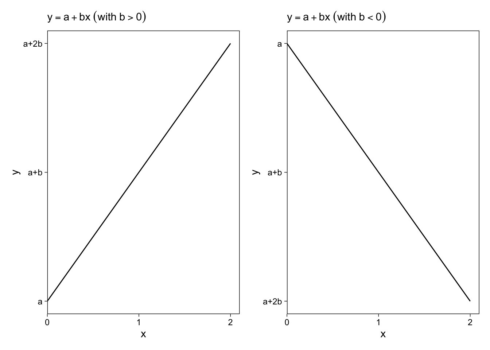
Probabilistic distributions are used in regression modeling to help to characterize the variation that remains after predicting the average. These distributions allow us to get a handle on how uncertain our predictions are and, additionally, our uncertainty in the estimated parameters of the model. Mean (expected value), variance (mean of squared difference from the mean), and standard deviation (square root of variance) are the basic concepts of probability distributions.
Normal distribution, binomial distribution, and Poisson distribution and Unclassified probability distributions are types of probability distributions presented here. They will be worked out in detail in the following chapters.
In regression we typically model as much of the data variation as possible with a deterministic model, with a probability distribution included to capture the error, or unexplained variation. Distributions can be used to compare using such as the mean, but also to look at shifts in quantiles for example. Probability distributions can also be used for predicting new outcomes.
3.2 Presentation
Remark: Following part has to be designed further (Harrie)
Wim Bernasco chaired the practice part of chapter 3 on Tuesday 23rd of January 2024. His original script you can find here
Open two libraries first.
Wim looked at the excercises of chapter 3. He start with excercise 3.1: Weighted averages.
You often encounter weighted averages when you work with aggregated data, such as averages in subpopulations using
Groups: the categories that are being weighted (here four age groups)
Shares: the proportions of each group in the sample
Means : the means values of ‘something’ in each group
We first calculate total sample size by summing the four categories:
n_sample = 200 + 250 + 300 + 250
n_sample[1] 1000Next we multiply the means of the groups with their share in the sample.
50 * 200/n_sample +
60 * 250/n_sample +
40 * 300/n_sample +
30 * 250/n_sample[1] 44.5We can also do this more systematically and in a tidy way. Set up a little table that holds the relevant input data.
tax_support <-
tibble(age_class = c("18-29", "30-44", "45-64", "65+"),
tax_support = c( 50 , 60 , 40, 30),
sample_frequency = c( 200 , 250 , 300, 250))
tax_support# A tibble: 4 × 3
age_class tax_support sample_frequency
<chr> <dbl> <dbl>
1 18-29 50 200
2 30-44 60 250
3 45-64 40 300
4 65+ 30 250
Note
Note. I stumbled on the tribble function from the tibble package. This allows inputting observations in rows and variables in columns. Nice for small inline dataframes.
tax_support_alt <-
tribble(
~age_class, ~tax_support, ~sample_frequency,
"18-29", 50, 200,
"30-44", 60, 250,
"45-64", 40, 300,
"65+" , 30, 250
)
tax_support_alt# A tibble: 4 × 3
age_class tax_support sample_frequency
<chr> <dbl> <dbl>
1 18-29 50 200
2 30-44 60 250
3 45-64 40 300
4 65+ 30 250Next we calculate the weighted average. - We first calculate the share in the sample of each group
- Next multiply shares with percentage tax support
- And finally sum over the four groups
tax_support |>
mutate(sample_share = sample_frequency / sum(sample_frequency),
sample_tax_support = tax_support * sample_share) |>
summarize(sample_tax_support = sum(sample_tax_support))# A tibble: 1 × 1
sample_tax_support
<dbl>
1 44.5Then he looked at excercise 3.2. He was not sure whether he fully understood this exercise. He assumed the idea is to let us think about how other age distributions would affect the level of support. Thus, if the tax support in the four age groups is given, which age group distributions would yield an overall support percentage of 40? An obvious but unrealistic distribution would consist of only people aged 30-44, because among this group the support is precisely \(40\%\).
Mathematically, the situation can be described with 2 equations with 4 unknowns.
The first equation would just constrain the four weights to sum to 1.
\[(eq 1) wght_18 + wght_30 + wght_45 + wght_65 = 1\]
The second equation would constrain the weighted average to be 40
\[(eq 2) wght_18 * 50 + wght_30 * 60 + wght_45 * 40 + wght_65 * 30 = 40\]
To find a deterministic solution, we need to assign values to two unknowns
If we fix the shares of the least extreme age classes “18-29” and “45-64” to their original values (.2 and .3), we should be able to get an overall tax support of \(40\%\) by finding a suitable mix of age group 30-44 (supportlevel \(60\%\)) and age group 65+ (support level \(30\%\)).
\[(eq 1) wght_30 + wght_65 = .5\] \[(eq 2) wght_30 * 60 + wght_65 * 30 = 40 - 22 = 18\]
\[(eq 1) wght_30 = .5 - wght_65\] \[(eq 2) (.5 - wght_65) * 60 + weight_65 * 30 = 18\]
\[(eq 1) wght_30 = .5 - wght_65\] \[(eq 2) 30 - wght_65 * 60 + weight_65 * 30 = 18\]
\[(eq 1) wght_30 = .5 - wght_65\] \[(eq 2) 30 - 30 * wght_65 = 18\]
\[(eq 1) wght_30 = .5 - wght_65\] \[(eq 2) 30 * wght_65 = 12\]
\[(eq 1) wght_30 = .5 - 0.4 = .1\] \[(eq 2) wght_65 = 12/30 = .4\]
So, we get
50 * .2 + # this was fixed
60 * .1 + # this was calculated
40 * .3 + # this was fixed
30 * .4 # this was calculated[1] 40So it worked.
Now he looked at excercise 3.3 Plotting a line.
curve(expr = x,
from = 0,
to = 20)This gave an Error in x(x): object ‘x’ not found. Wim thinks the curve function needs at least one existing function name (log, exp, sqrt, sin, cos, …) or math symbol (+ - / * ^ …) beyond the ‘x’
Here are some lines
curve(expr = x*1,
from = 0,
to = 20)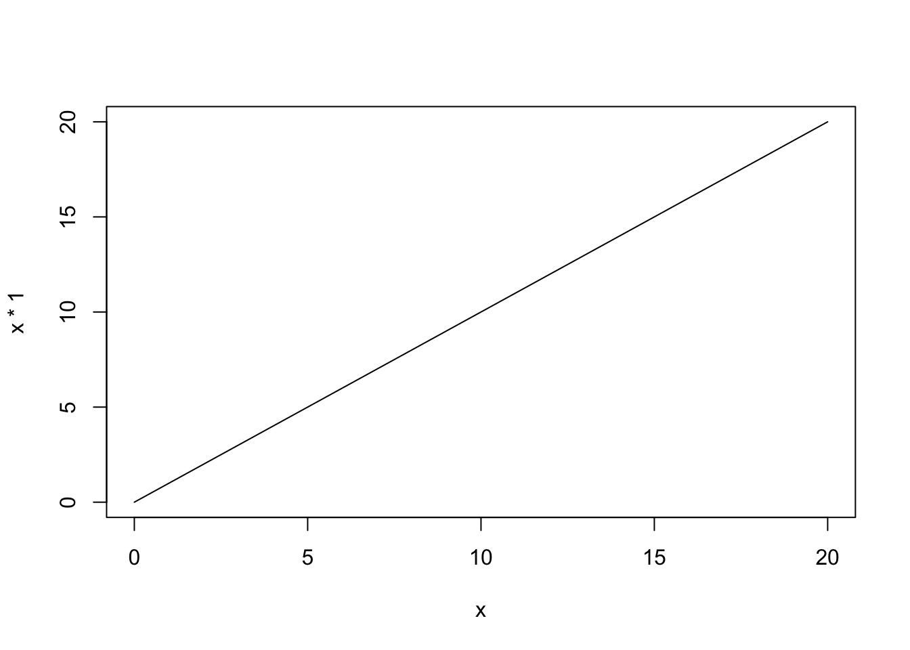
A flat line
curve(expr = 1 + 0 * x,
from = 0,
to = 20)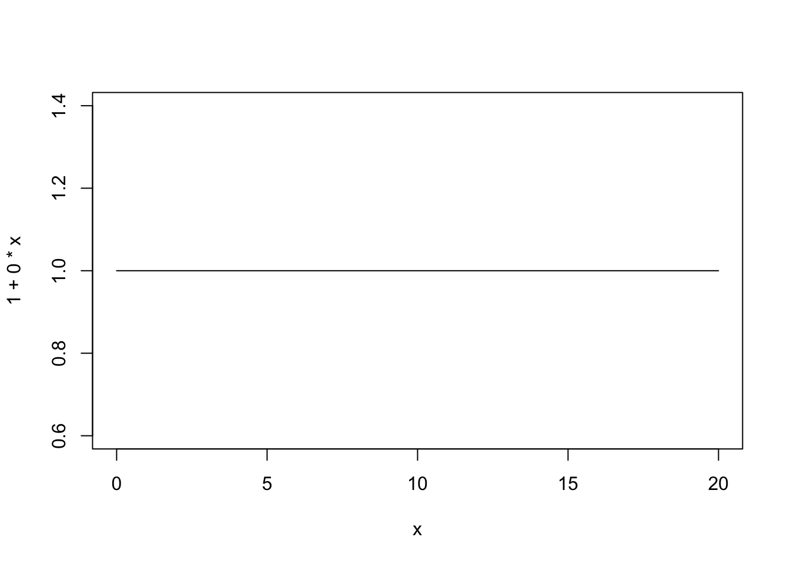
Another flat line
curve(expr = 1 + 5 * x,
from = 0,
to = 20)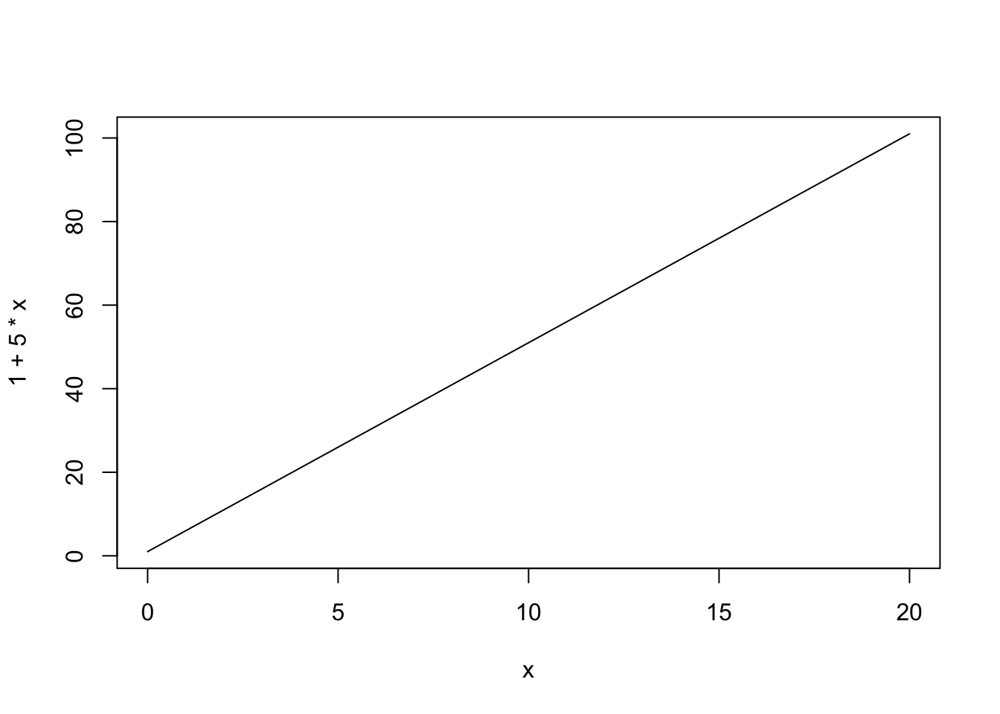
A log line
curve(expr = log(1 + x),
from = 0,
to = 20)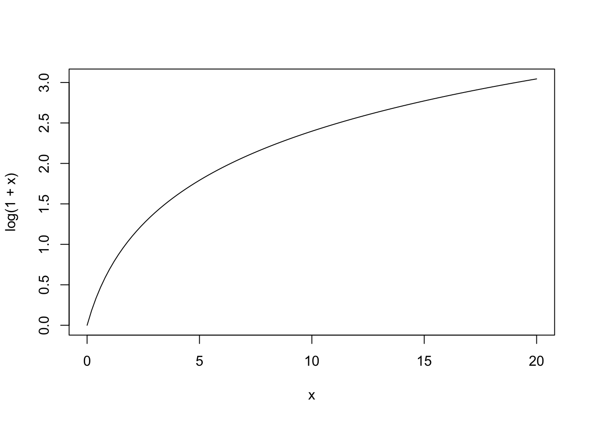
An exponential line
curve(expr = exp( x),
from = 0,
to = 20)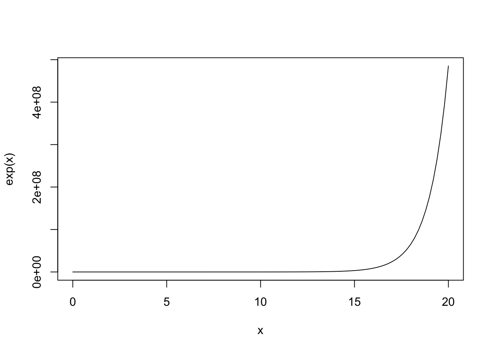
A square root line
curve(expr = sin(sqrt(x)),
from = 0,
to = 2000)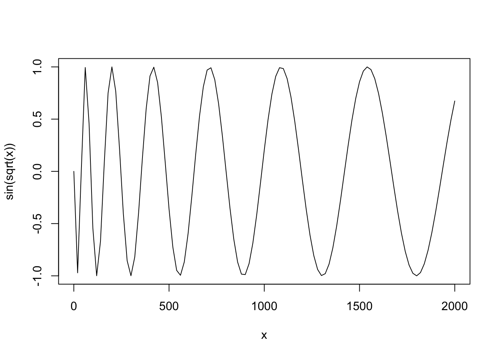
Mile record data
Open dataset from rosdata.
data("mile")
glimpse(mile)Rows: 32
Columns: 6
$ yr <int> 1913, 1915, 1923, 1931, 1933, 1934, 1937, 1942, 1942, 1942, 19…
$ month <dbl> 5, 7, 8, 10, 7, 6, 8, 7, 7, 9, 7, 7, 7, 5, 6, 7, 8, 1, 11, 6, …
$ min <int> 4, 4, 4, 4, 4, 4, 4, 4, 4, 4, 4, 4, 4, 3, 3, 3, 3, 3, 3, 3, 3,…
$ sec <dbl> 14.4, 12.6, 10.4, 9.2, 7.6, 6.8, 6.4, 6.2, 6.2, 4.6, 2.6, 1.6,…
$ year <dbl> 1913.417, 1915.583, 1923.667, 1931.833, 1933.583, 1934.500, 19…
$ seconds <dbl> 254.4, 252.6, 250.4, 249.2, 247.6, 246.8, 246.4, 246.2, 246.2,…He guesses that year is a time variable that include \(monthnumber/12\) as decimals. Let us check the first two cases.
1913 + 5/12[1] 1913.4171915 + 7/12[1] 1915.583He thinks seconds equals \(min * 60 + seconds\). Let us check the first two cases.
4 * 60 + 14.4[1] 254.44 * 60 + 12.6[1] 252.6Correct.
Let us plot data using base R.
plot(x = mile$year,
y = mile$seconds,
xlab = "Year",
ylab = "Seconds",
main = "Mile record times")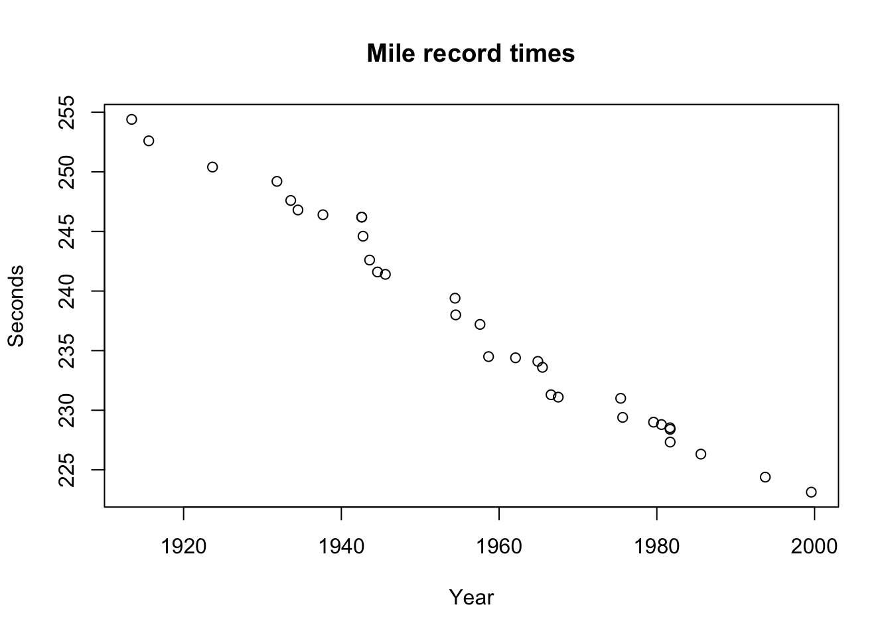
Let us plot data using ggplot2.
ggplot(data = mile,
mapping = aes(x = year,
y = seconds)) +
geom_point() +
labs(x = "Year",
y = "Seconds",
title = "Mile record times")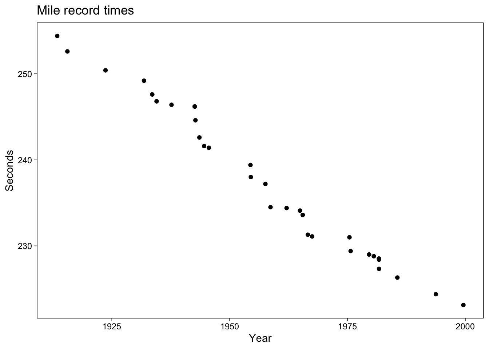
Estimate the line
fit <- lm(formula = seconds ~ year,
data = mile)
summary(fit)
Call:
lm(formula = seconds ~ year, data = mile)
Residuals:
Min 1Q Median 3Q Max
-2.6129 -0.7457 -0.1876 0.7079 2.8540
Coefficients:
Estimate Std. Error t value Pr(>|t|)
(Intercept) 1006.8760 21.5319 46.76 <2e-16 ***
year -0.3931 0.0110 -35.73 <2e-16 ***
---
Signif. codes: 0 '***' 0.001 '**' 0.01 '*' 0.05 '.' 0.1 ' ' 1
Residual standard error: 1.383 on 30 degrees of freedom
Multiple R-squared: 0.977, Adjusted R-squared: 0.9763
F-statistic: 1277 on 1 and 30 DF, p-value: < 2.2e-16fitted_intercept <- fit$coeff["(Intercept)"]
fitted_slope <- fit$coeff["year"]ggplot (add the estimated regression line).
ggplot(data = mile,
mapping = aes(x = year,
y = seconds)) +
geom_point() +
labs(x = "Year",
y = "Seconds",
title = "Mile record times") +
geom_abline(intercept = fitted_intercept,
slope = fitted_slope,
color = "red")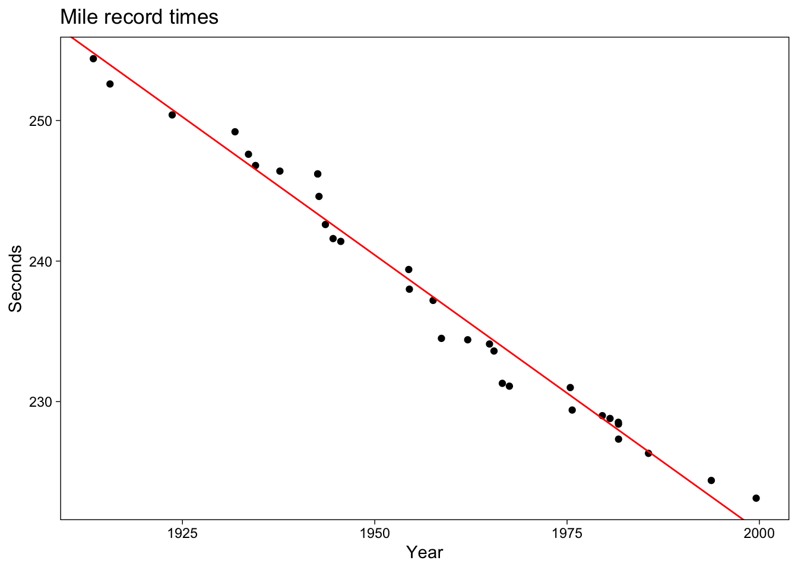
Now Exercise 3.3 Probability distributions.
Make sure we all get the same numbers and create just 10 random numbers.
set.seed(123456789)
standard_normal_10 <- rnorm(n = 10, mean = 0, sd = 1)
standard_normal_10 [1] 0.5048723 0.3958758 1.4155378 -0.7223243 -0.6183570 -1.5626204
[7] 0.1279588 -0.1569521 -1.5153363 1.1616016Now create 1000 random numbers.
standard_normal_1000 <- rnorm(n = 1000, mean = 0, sd = 1)
standard_normal_1000 [1] -1.061663412 1.052570502 -1.090317123 -0.950436352 0.188894236
[6] -1.306912792 -1.092966042 1.167427533 1.198129657 -1.962599513
[11] 0.726710608 1.067047285 -1.814585236 0.008796922 -0.326998699
[16] 0.578129296 1.219543458 -0.289854421 -1.278031954 -0.486875912
[21] 0.166523530 -1.807374582 -0.959307836 1.070328439 0.490747416
[26] 0.183632890 -0.531039138 0.742454212 -2.279520776 0.181297942
[31] 0.035720085 -0.497962631 0.278575421 0.644924868 1.442743659
[36] -0.269228559 -0.227812035 -0.764588649 0.064297676 -0.342314814
[41] 0.145374612 0.201355915 1.412424707 -0.778640243 0.776387284
[46] -1.766810278 -0.370483045 1.453107848 -2.085832080 1.486204368
[51] -0.304737496 0.374573279 -0.181112335 -0.410908190 -0.779801193
[56] 0.635655827 0.875235147 1.989753477 0.988853775 -0.477072983
[61] -0.483031634 0.478349278 0.847588504 0.819227723 -0.757599229
[66] -0.651704273 -0.819780063 0.314466775 -0.642793191 0.462462467
[71] 1.228671825 0.768043545 1.822470356 -0.015831647 1.193765090
[76] 1.174421433 -0.933883537 0.045310865 0.586513664 -0.212695193
[81] 0.635938151 0.466727204 -0.805346886 1.128882229 -0.752167305
[86] 0.405607127 0.718402581 1.311548133 -1.472449144 0.263474358
[91] 0.476863064 0.093451594 1.079127690 0.115624208 0.881592204
[96] -0.717208531 0.379197599 0.810392054 -0.022602077 -0.393734353
[101] 0.890440211 0.218751754 1.819710000 -0.113118367 -1.376020109
[106] -0.687003544 0.404233603 0.473349427 -1.472634623 0.255850678
[111] 1.636241747 0.776948518 0.452961045 0.239798184 1.064148860
[116] -1.157485450 -1.325870918 -0.556262305 0.695556913 1.849128706
[121] -0.546115504 1.199722352 -0.373461962 1.695054564 0.345647018
[126] -0.300373425 -0.758852355 -0.439536762 -0.911627889 -1.062711164
[131] 0.583977566 2.254306580 0.892527745 0.330880226 1.047716407
[136] 1.800470621 -0.077667469 0.953396171 -0.362331474 -0.572677198
[141] -0.115801010 0.578694219 1.252305478 0.062864303 -0.500846468
[146] 0.301033028 -0.091441959 -1.021024978 1.532396390 -1.614638791
[151] 0.124376539 1.516339118 -0.637421537 -1.460134494 -0.104171149
[156] 0.283330247 0.519644134 -0.389178901 -1.467731996 0.752390305
[161] 0.684931478 0.736974346 1.206144962 0.646814918 0.386761747
[166] -0.473459072 -0.916432260 2.014166539 -0.514303795 1.231067547
[171] -1.095055517 0.232072469 -0.114339641 0.986292747 1.527863140
[176] 2.014417439 1.296457948 1.176163496 -1.225085267 0.598638538
[181] -0.860532922 -1.115510398 0.986917934 1.046605040 1.064473124
[186] -0.034352015 -1.267312770 1.458750000 -0.060433145 -2.170809880
[191] -0.143198447 1.523751904 -1.153228885 0.287193566 2.187552388
[196] -0.871026690 0.366228076 -1.792825981 0.260461287 -0.948887018
[201] -1.264107233 -0.746167040 1.184711617 -0.661406340 0.467005725
[206] 0.103082290 1.316218759 -0.497935393 1.138849799 -1.171413659
[211] 1.117012728 0.637569129 -0.791989257 1.261678127 0.858112119
[216] -1.592634470 -1.091449434 -0.796549497 0.085050778 -0.730252490
[221] -1.602584244 -0.901320612 -0.886749798 1.151294724 0.309119664
[226] 2.038658729 1.211958055 3.474272822 1.178823234 -0.230296119
[231] 1.009140512 -1.273829957 -1.021244836 -1.492451022 1.706622490
[236] 0.308095833 0.487263757 0.110756620 -1.644784500 -0.136517072
[241] 0.032738565 -2.191747811 -0.669109526 -1.754765985 1.611450969
[246] 0.895454818 0.553153680 -0.087780126 0.855040077 0.936633200
[251] 0.699012460 -0.595959971 -0.659724284 -0.944726851 -1.690323694
[256] -0.646178087 1.942268568 -1.468156945 -1.382826339 -0.024835730
[261] -1.861458816 1.627128509 -0.967444398 0.598099381 -0.781000166
[266] 1.389464966 0.740786881 -1.110800078 -1.061679873 -1.203555098
[271] -0.793647940 -2.204102357 -2.064291309 -0.437772936 -0.138580802
[276] 0.961009454 -0.229892306 -0.301744029 0.048549949 -0.449776280
[281] 0.169249675 0.675056502 -0.500345601 -0.365878737 -0.242695372
[286] -3.209428609 -0.910249547 0.410409535 -0.289355259 -0.242433101
[291] -0.374580838 1.224609382 -0.088864179 -0.657562516 -0.604385696
[296] 1.624285959 -0.355296373 0.551783490 0.508375879 1.434368913
[301] -1.544486681 0.092913037 1.043645741 -0.834306330 -0.830830232
[306] 1.101482704 0.426233880 -1.246908215 -0.020578899 1.770266726
[311] -1.332695326 -0.263359784 -0.418167033 -1.122167976 1.383596914
[316] -0.225961154 1.956001955 0.556120791 -0.472229035 0.300668554
[321] -0.130231331 0.955784876 -1.052625010 0.004550020 -1.393051290
[326] -0.493776107 1.169367787 -2.114861104 -0.166370681 0.188014598
[331] -0.688554635 -0.013073488 -0.358876245 -0.686900784 0.157453582
[336] -1.133225737 0.594070754 0.104203357 0.456306505 1.062001676
[341] 1.138354085 0.589601469 -1.275931385 -1.535351680 -0.046042782
[346] -0.475597556 -1.153112495 0.713947427 -0.149839484 -0.271762650
[351] -0.687745248 0.517564144 0.348138961 -0.679341958 -1.324600825
[356] 1.397828480 1.346973795 -0.104330915 -2.361519048 -0.175852535
[361] -1.505001048 0.129477581 1.764175012 1.328798813 0.836866024
[366] -2.362406109 -1.138177605 0.271132478 -0.093236944 0.051361765
[371] 1.386927323 -0.566704897 1.153903566 -1.589266147 0.329436651
[376] 0.088564886 1.875675814 0.077425546 -0.458071276 1.568209844
[381] -0.486269417 0.504462937 0.217098490 -0.409793474 0.706634773
[386] 2.195885188 1.132788213 0.504536042 -0.174252770 -0.599933669
[391] -1.954054940 -0.069901873 1.169662122 2.083517584 0.853412450
[396] -0.520293201 -1.680256197 0.873476626 1.233214590 -0.193196296
[401] 0.147949643 -0.398916472 1.778745720 0.086539909 -0.297969568
[406] 0.116413625 1.899864108 2.483199340 -0.894249076 -0.076765904
[411] -0.012192129 -0.398980102 -0.459238207 -0.251333763 2.074148220
[416] 1.569777149 0.854486953 0.334459125 0.679615566 -0.042708895
[421] -0.203061214 1.214076884 -0.521328638 0.229114549 0.525066822
[426] 1.188338302 0.427710361 -1.421136379 0.143552343 0.473221986
[431] -0.198549896 1.970774927 0.295754866 -0.378338481 -1.063870405
[436] 0.833742686 -0.170188377 -0.875738533 -0.753818508 0.313852108
[441] 1.191384962 -2.013544749 -0.482764032 -1.018394100 0.883980522
[446] 0.868265011 -0.716689781 -0.328336168 0.445388131 0.808218401
[451] -0.245129836 -0.462961003 0.472176237 -1.108926213 0.264350455
[456] 0.065236046 -0.659740935 -0.834721475 -0.047011623 2.104034142
[461] 0.552332769 0.575845196 0.572305308 -0.554099128 -0.128096008
[466] 1.064662013 0.264881005 1.116264740 -0.122539936 -0.588059473
[471] -0.004782334 0.441794941 -0.847832766 0.461424280 0.440298949
[476] 0.632027126 0.020824169 0.263561913 0.683976740 -0.464759965
[481] -0.300120971 0.292900455 -1.241606668 1.105953221 -1.656445633
[486] -1.849171732 -0.146179655 -0.695640837 3.439082240 1.737941866
[491] 0.262743745 0.393416276 1.307892651 -0.237314968 -0.346125076
[496] 0.724831062 -0.401482410 -1.373619084 0.638895460 0.003968125
[501] -0.674968388 0.193619964 0.177968482 1.247622709 0.489814371
[506] -0.420219336 -0.692194069 1.093291604 1.255184569 0.564204925
[511] -1.313939867 0.173787730 -0.929701162 -0.782137726 -1.667410988
[516] 0.740487733 -1.013003119 0.780451647 -0.589248358 -1.185496824
[521] 0.851914808 0.967248766 -0.887859965 -0.303154470 1.270233228
[526] 1.354051183 -1.171188141 1.028680789 0.920419370 0.080897387
[531] 0.068353979 0.737337395 0.600238792 0.518477067 0.706829703
[536] 1.136746362 0.566868850 1.365698974 -0.278756451 -0.963526322
[541] -0.618407835 -1.713982474 0.778309203 0.048128751 -1.647713624
[546] -0.858599686 1.280295710 -1.312078482 1.064281888 -0.022734798
[551] -1.516398938 0.160523885 0.568027170 0.548243036 -1.270928598
[556] -1.134353721 -0.371437680 -0.474229834 0.588971771 -0.154372881
[561] -0.399462674 -0.885228517 0.245562886 0.044495174 -1.099781368
[566] 0.105450879 -0.745713326 2.055700616 0.287482763 1.819771770
[571] -2.053217367 -0.829851580 -0.111969764 0.635369233 -0.796990434
[576] -0.082430680 1.382544041 -0.544069788 -0.332240758 -0.529927033
[581] 0.627006126 1.281252408 -0.368337208 -0.111418120 -0.234561670
[586] -0.957478502 -0.258631603 0.016980225 1.370711391 0.605315194
[591] -0.249766570 0.574472542 -3.597103912 0.752491668 0.710582823
[596] 0.678380741 2.427473277 -1.925260520 0.665844476 0.927951182
[601] -0.154336724 -0.709491830 2.044347694 1.001991508 0.236733242
[606] -1.366002534 0.671055357 -0.397176994 0.502649789 0.458973865
[611] 2.465271774 -0.563320742 0.985853967 -1.034794357 -0.506161507
[616] 0.686855052 -0.621446426 -0.886162258 1.070097794 -1.249397856
[621] 1.373161924 0.452060231 -0.226413028 1.135791176 -2.599336943
[626] -0.695679854 -0.524972049 -1.432982612 -0.196297963 -0.197364255
[631] 0.437270479 0.240184208 1.734828309 1.007838817 -0.840800669
[636] -0.217787881 -0.806885122 -0.425109014 1.064361312 -0.095524724
[641] -0.360679543 2.553888936 0.874702052 -0.399647291 1.281519443
[646] 0.143696017 -0.184071995 0.773536282 1.208995946 -1.443964650
[651] 1.704565722 0.151092665 -0.386336152 1.700635556 -0.447619380
[656] -0.802619056 0.478169841 -1.726794357 0.794543822 -1.098598091
[661] -0.112688081 -0.123328898 0.383079065 1.437280265 -0.827945773
[666] -0.921464613 1.275686480 -0.609020453 0.567700693 -0.067568694
[671] 0.263102443 -1.118755278 -0.233364331 0.284440714 0.550787304
[676] -1.995004217 0.021388669 -1.240658153 -0.367147762 -0.315910150
[681] 0.012538445 0.261414638 -0.630428323 -1.489224242 -0.920304580
[686] 0.418211735 1.117202974 -0.256624352 -0.723933594 0.132992540
[691] 0.455976443 -1.146687546 -0.638927251 0.142464327 -1.352204135
[696] -0.827456054 0.039485351 0.273559480 -0.260044050 -1.010501636
[701] 0.464349573 -1.172870547 -0.948163024 1.631448800 -0.906406230
[706] 1.351258712 1.173865000 -1.408513779 0.247462194 -1.307426095
[711] 0.078941207 0.461255221 0.785763241 0.009963033 -0.800305541
[716] 0.658311701 0.392627960 -0.229549160 1.560655175 -0.768765163
[721] 1.747516949 -0.579797142 0.838998611 0.939737555 -1.393067273
[726] -0.425247688 -0.527556921 -1.451242034 0.259286789 0.357873412
[731] -0.436711867 1.990611222 -2.361342303 0.343075849 1.777521472
[736] -1.112170909 -0.315248954 -1.940446528 0.066176854 1.074680534
[741] 0.433425561 1.753004402 -0.153075922 -1.082046080 -0.616556844
[746] 0.197640507 0.249302480 -0.657164791 -0.654614637 1.540667243
[751] -2.117823346 1.213275331 1.189345512 1.289635262 0.713855407
[756] -2.177418938 -0.708704134 -0.969202170 -0.560387016 1.780782495
[761] -0.463928505 -1.705198663 0.913893796 -2.239207954 -0.833030342
[766] -0.711704149 -0.241475806 -0.058950994 1.881455070 -1.691607804
[771] -1.456375745 1.007027634 1.258668255 0.271908131 -0.632830111
[776] 0.363236134 -1.010927191 0.709293300 0.265092917 0.964131471
[781] -0.652849104 -0.946919982 -0.302566767 -0.092183711 0.036661966
[786] 0.855724019 -0.306199790 -1.011848609 0.331970316 -1.149080148
[791] 0.686612922 1.016417193 -1.168403664 0.130488017 0.499820809
[796] 0.836004098 0.882092423 -0.923788679 0.362713947 -0.986376212
[801] -0.289023817 1.716984713 -0.604825003 -0.887997589 2.189761180
[806] 0.616147892 -0.070885258 0.187712877 -0.279178878 0.801337056
[811] -0.184017677 -0.500316578 -0.232925824 1.130197892 -0.411551252
[816] 1.449588512 -0.615619485 -0.360117130 -1.396929387 -0.301968789
[821] -1.023579202 1.490018690 1.451143275 -1.112025404 -2.154004334
[826] 0.594907350 0.125912332 -1.045329921 0.703605861 1.158327194
[831] -0.991926505 -0.636717166 0.581674061 0.498512357 -1.291860746
[836] 1.754029315 -1.983711899 -1.053370289 0.366732548 -0.589422117
[841] 1.019718375 -1.288139052 0.796488008 0.066149444 -0.364504236
[846] -0.011913497 -0.719727749 1.345936118 -0.398459506 0.464172459
[851] -1.587640386 0.554777066 0.161092232 -0.086646320 -0.757580101
[856] -0.938208598 0.693590238 0.014984160 1.806777756 -0.791618926
[861] 1.346059179 0.289152891 0.895315132 -1.519466618 0.447917424
[866] -1.050875322 0.231461815 0.366616181 0.058179416 0.745690251
[871] -0.321905108 0.532372013 0.789830270 0.722903093 1.170468288
[876] 2.027930729 -0.557478394 -0.732282306 0.480262119 0.872305792
[881] -0.989503339 0.335795907 0.598070984 1.674561176 0.461297478
[886] -0.082137113 -1.591828205 -0.843280800 0.253762075 0.138178447
[891] -0.407648835 -0.977331578 1.224018910 -0.523250746 -1.176379330
[896] -0.736417273 0.410979263 -0.208284951 -0.333544957 -0.010397638
[901] -0.313326946 -1.550235920 1.262284021 0.531112825 -0.508363666
[906] 0.986317751 -0.458063647 -0.436006681 -0.281568471 0.913795075
[911] -0.516905798 1.250219043 0.425193200 -0.410191687 -0.018618618
[916] 0.658877918 1.445628123 1.050116596 -0.491743132 0.040724242
[921] 0.833149865 2.050862851 0.107636282 -0.713484299 -2.165188362
[926] -0.907123352 -0.932327085 1.611345287 -1.730749632 0.682894538
[931] -0.220628460 0.753799190 -0.688570841 2.273481065 0.970725056
[936] -1.862272422 0.686123002 -2.385840317 -1.562201736 -2.037963829
[941] -1.009468936 -0.953763956 -1.071801680 0.040896489 0.466888773
[946] -2.966652069 -0.309560597 0.163401578 1.314137130 0.383647077
[951] -0.093980638 -0.659186963 -0.328385885 1.525500018 1.099814865
[956] -0.993356483 0.253701541 0.231036930 1.555578093 -1.063792388
[961] -2.337635701 -0.988355667 -0.691879012 1.045906070 0.720456196
[966] 0.508436253 -2.549703896 -0.625790693 0.654047517 -0.275809974
[971] -1.884396110 -0.541622748 -0.426294977 -1.053806175 -0.340509661
[976] 1.050333781 1.270531517 -1.248564294 0.301348195 -0.061202647
[981] -1.690766727 0.183984501 0.471025896 -0.771705189 0.844689989
[986] 1.013304989 -0.205374923 -1.799614069 -0.376543475 -0.164823241
[991] -0.612814310 -0.304382116 -0.971282247 -0.466646850 0.690276118
[996] -0.088841389 0.137389530 1.156245952 -1.748779220 1.088166820he most basic histogram (single variable distribution) is created with the hist function.
hist(x = standard_normal_1000,
breaks = 20,
col = "lightblue",
main = "Histogram of 1000 standard normal random numbers",
xlab = "Standard normal random numbers")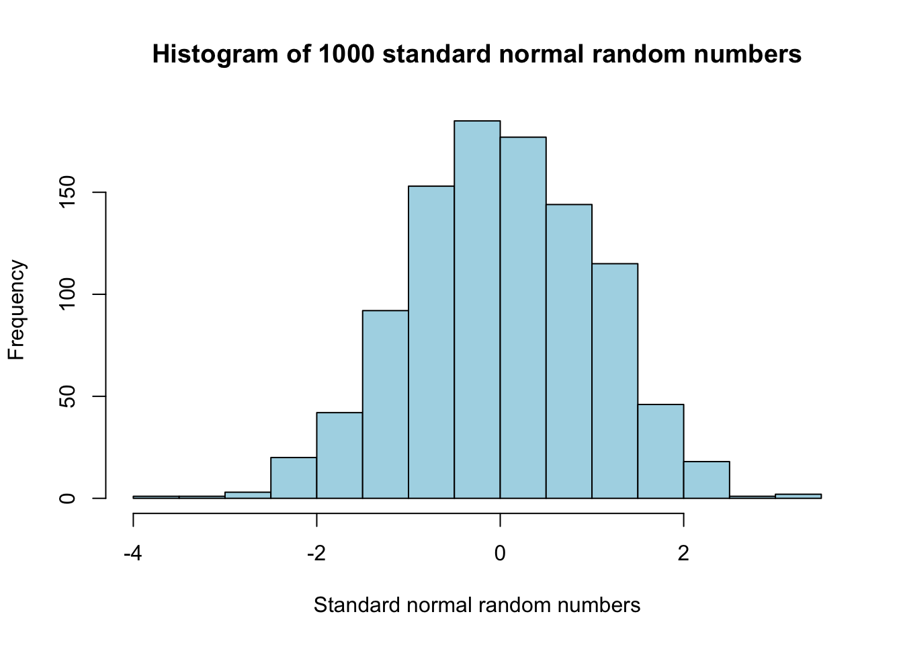
Density for the standard normal (mean = 0, sd = 1)
x_axis <-
seq(min(standard_normal_1000),
max(standard_normal_1000),
length = 40)
density <- dnorm(x_axis,
mean = mean(standard_normal_1000),
sd = sd(standard_normal_1000))By assumption (theoretical distibution has mean 0.00000 and sd 0.00000).
density_theoretical <- dnorm(x_axis, mean = 0, sd = 1)
plot(x = x_axis, y = density,
type = "l",
col = "red",
lwd = 2,
ylab = "Density",
main = "Density of standard normal distribution")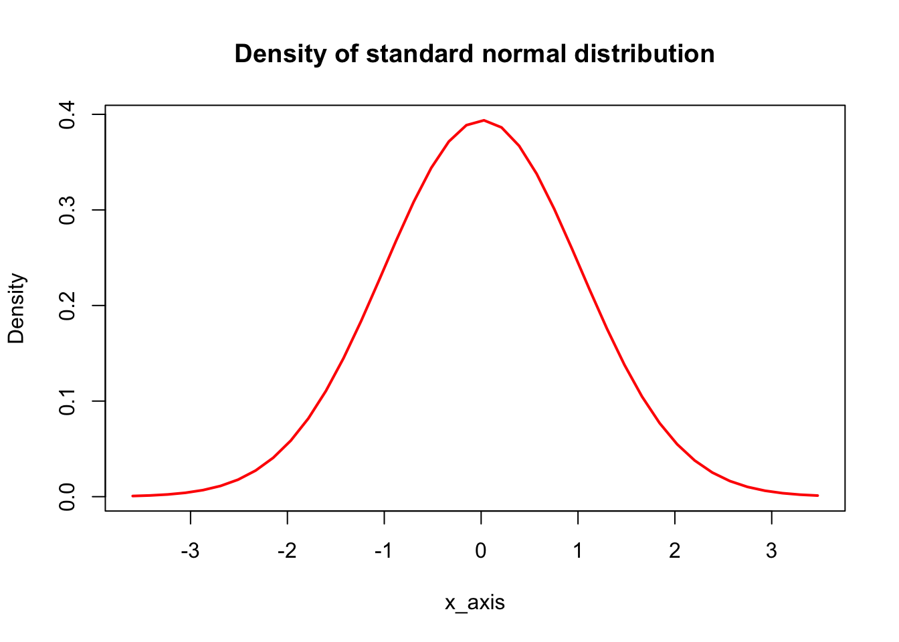
Creating 1000 random numbers
sd2_normal_1000 <- rnorm(n = 1000, mean = 0, sd = 2)
sd2_normal_1000 [1] -0.805535535 -2.470653664 1.463633275 1.157352600 2.537858348
[6] 0.444059159 -2.698281064 -2.076201264 2.511087440 0.558001105
[11] -1.793074012 1.446574024 1.454320627 -3.553532326 -2.809216317
[16] -1.634807822 -0.063999002 1.334217196 2.391584516 3.320468840
[21] 1.177130052 -2.519482326 2.492598284 0.727747067 1.672149074
[26] -0.090603978 3.973857933 0.652545798 2.964922417 -0.888716450
[31] -0.380968986 -0.566561328 -5.311837711 0.042149203 1.098434138
[36] 3.341083484 2.071248422 -2.115238486 0.635372959 2.046447650
[41] -0.832459822 0.554883391 -0.739068659 3.173172438 -1.141539330
[46] 4.167914353 -2.134196001 -1.382608666 2.649210393 0.604698498
[51] -2.522584462 -0.204609355 0.050878444 3.206902627 -1.026103627
[56] 0.558484999 -3.085526097 0.818560979 4.034049720 -4.748784822
[61] 0.545536425 2.017444580 1.376727867 1.895787438 2.731876016
[66] -4.307090675 1.809024356 -1.430342343 -1.857736118 -0.372438061
[71] -2.531176309 -3.299196702 0.828854250 -3.238836387 -1.664569057
[76] 1.316157233 -2.707624553 -1.416067097 -1.100911682 -1.272749175
[81] -0.328514436 -0.274600978 -0.854907645 0.151309519 -1.832957561
[86] 0.944395254 -2.372203347 -2.201937668 -2.960786834 4.273969967
[91] 0.454057772 5.230495634 -1.796191993 1.496818946 0.970732400
[96] -3.342906981 -0.680294659 2.005707352 -0.351813586 0.863306288
[101] 2.406876705 -1.718899618 3.060860586 -1.618351598 -1.117695482
[106] 0.754765472 -1.298933213 1.342846689 1.926086121 3.237975716
[111] 5.475666792 2.126579457 2.627201116 0.118959010 -2.339279576
[116] 2.509248734 0.893310454 0.058319037 -0.972556770 -0.923787211
[121] -2.817874822 -4.105928151 -1.701231005 -1.574055428 -0.004620614
[126] 1.298286664 -0.896420482 -1.397186516 0.381827201 0.616862080
[131] 0.645402392 -1.184598629 0.494789981 -1.846165549 -2.318228203
[136] -2.345395143 -0.304069739 -0.036951573 2.791479292 -2.524186999
[141] 4.437951265 1.302149401 -0.930335858 -1.569516711 1.043261403
[146] -1.866329176 -4.888744330 -3.509724463 0.023586067 1.189160667
[151] 3.363289941 1.056928770 1.874451325 -2.946278795 -0.123469429
[156] -4.708799126 2.760169269 -1.071708780 0.781876354 1.810121281
[161] -0.098268174 0.730575785 2.330467610 0.297380907 2.175841626
[166] -0.961934755 2.426957948 -2.543578401 4.230768317 -0.587654521
[171] -0.454950073 -3.532875220 -3.710667454 -1.690924358 -0.683535297
[176] 1.819372278 -2.384667455 2.551939581 -0.787281121 0.463737301
[181] -0.188490745 -3.383111471 -0.352577498 -0.680022452 -4.568619691
[186] 4.081703806 1.657204159 1.957626322 0.504377587 2.170399071
[191] -2.862373458 -2.404077771 -1.279544241 1.758045609 0.062893567
[196] -2.689739814 -0.727100432 -3.374278456 0.702240106 0.729365881
[201] -1.255484833 1.907340630 -0.823444532 -1.668059050 0.375594048
[206] 0.259118290 -2.026439336 -0.660554414 -0.779850720 -0.776275768
[211] -1.437490289 1.478075666 -1.249453088 -0.771332804 1.460328112
[216] 2.318357146 1.345128574 -0.667274843 1.487596593 0.694527088
[221] 3.573729084 -1.210797275 0.560512867 -2.469800428 -0.594442589
[226] 1.143988787 -0.027158871 0.769370032 -0.637396010 -0.892342272
[231] 0.157950160 -3.070163603 -1.329621680 2.723556016 1.492266185
[236] 0.384141823 -1.038783498 -1.189064042 -0.633848852 -1.170560809
[241] -1.014204394 -3.271385662 -0.305599745 -4.608972333 1.197969670
[246] -0.324711656 -0.737323602 -2.886546834 -4.574729679 -3.446418556
[251] -2.232540613 -0.032030480 -2.386899032 0.104349734 -2.963409425
[256] 2.651192478 -0.568814031 -1.112819948 1.204344636 0.356197128
[261] 0.817141058 0.757148694 -0.919444881 -3.341667987 4.579231045
[266] -0.175179851 0.381080019 0.480201556 1.748917817 0.784951109
[271] 1.858617052 0.578360705 1.059301448 0.068876978 3.252680917
[276] -0.346376302 3.821825268 -1.080094362 1.172659323 -1.224710743
[281] 0.882301565 0.957048193 1.848400688 -1.407914244 -2.460613961
[286] 2.068697823 -3.648338344 -0.951702394 -3.040103337 -0.311689939
[291] 2.134595523 -2.019822582 -0.692931326 -0.385048903 0.149178867
[296] 0.903408284 -0.251941153 1.092124856 0.438042395 -0.599377101
[301] -0.054469174 -0.622187975 -4.304748967 1.329997282 1.457387946
[306] 1.969481777 0.992614177 0.090790649 -1.114740444 -0.359900283
[311] -1.864196722 -2.674807045 1.921791207 -2.847126902 -0.834545212
[316] -1.833757152 1.098928116 -0.659619515 -1.182045409 -0.025203060
[321] -1.713990353 2.222971348 -2.533660285 1.195442052 3.917163400
[326] -2.261351420 1.674319611 5.144081467 -0.805460628 1.972629766
[331] -2.980291079 2.593664177 -1.766945545 -1.948707212 -1.207169809
[336] 1.498574338 -1.240035698 -2.148326171 -1.228417373 -1.563237250
[341] 2.775455694 1.693776177 -1.432937615 -0.225397363 -5.187247710
[346] -0.584451441 -0.122186595 1.066647298 -3.184796877 3.325406694
[351] 0.809861120 -2.622997484 1.670686218 -0.681023265 -1.875077614
[356] -1.744244772 -0.797749823 -3.499220975 0.583080617 0.768389198
[361] -1.013585035 0.832055579 -1.921622341 -1.015599156 -2.478835820
[366] 1.882166599 -4.318436080 0.913840840 1.405166636 3.136701544
[371] -4.762369533 -1.931292223 2.591708212 -0.283086676 -1.578225786
[376] 0.173695279 -0.801419197 -0.822329857 0.616449959 1.037006494
[381] 0.515611072 1.494683054 -1.421626156 0.174341375 -2.241991085
[386] 0.227076923 -3.218672922 -1.221066075 -0.621761875 4.344055955
[391] -1.642490393 -2.070151526 2.709319499 1.334979373 0.219441903
[396] 0.006464551 0.623900747 0.605555476 2.414283173 1.349477736
[401] 3.661080012 0.109997082 -1.652563735 -1.212979428 -6.355460691
[406] 1.275324660 -2.310634035 -0.758157216 -1.568659790 -2.020700818
[411] 0.039181822 0.481822269 0.495822054 -0.005742262 0.870405487
[416] 2.390003135 0.243052422 -1.175709188 0.658329796 0.955799710
[421] 1.461178381 -0.747042592 1.295949476 -4.440949810 4.037876213
[426] 2.349762051 -1.176526306 0.909108734 -1.592807825 3.028703496
[431] 1.083244834 -1.144851753 0.952586655 3.322007353 -1.336616613
[436] 1.281287664 2.404578437 2.744901517 1.179803546 0.502251076
[441] 1.491685787 -0.104739095 2.224476777 -3.529141550 1.149888693
[446] 1.307555806 1.023593020 3.898587647 0.681769010 -1.369798814
[451] -0.037362627 3.300188826 1.419107910 -4.050179243 0.058031608
[456] 1.858255868 -3.024600321 2.082104814 -3.180907210 -0.822109997
[461] 2.494585956 0.151118613 -2.927095884 0.027830571 -2.068958048
[466] -0.469633529 0.334131820 1.003360929 1.975914365 -0.212402328
[471] 2.558351278 0.160839816 0.685339832 2.018855663 1.257676758
[476] 2.169306991 0.801417669 3.171043953 1.840491479 0.923644842
[481] 1.771587459 -1.765809425 1.582972138 1.421723696 -0.150122135
[486] -0.505983760 -0.844799752 -1.381478961 0.296039304 0.322699612
[491] -0.977116857 -0.790787273 -0.647183140 -0.995917214 0.694741307
[496] 2.910185642 -3.368174753 -5.290754841 3.435493608 -1.101624010
[501] -0.528316485 -0.132415768 2.328741399 -0.657797943 2.718855370
[506] 1.372219089 1.111028296 -0.873034298 -3.567380428 -1.393160771
[511] 2.937375700 3.882797245 0.870113251 -2.430256351 0.507850592
[516] 1.572298491 -0.817760213 0.221309834 -1.371898045 -0.296434020
[521] -0.149089729 -1.692419141 -0.299983428 0.951306475 0.171622958
[526] 4.491547604 -0.150382115 0.289210221 -1.696673309 2.573212602
[531] -1.528130763 0.382153221 -1.848769071 0.051897674 2.616104452
[536] 1.287661005 0.470211812 -1.672938280 -0.006579393 1.247330869
[541] -1.425251238 0.263327101 1.368447843 0.935245028 -1.129894224
[546] -1.529481753 -3.431243515 0.361147573 -0.776446795 0.247555281
[551] -2.338870853 0.467602027 2.762276464 4.198637419 0.100890912
[556] 0.718894991 0.804756218 -1.838111708 2.898307555 0.059065924
[561] -1.127232075 3.972926087 3.168110233 2.479023998 -3.469565768
[566] -0.834672862 -1.088081489 -0.140917230 2.053553042 0.356887044
[571] -0.585600477 0.028040290 -0.733541223 -1.498438721 0.561214380
[576] 0.301077447 3.282449530 0.680394472 -3.790049792 2.574229427
[581] -0.571488097 0.687719756 -2.205994424 2.044236660 -0.360011770
[586] -1.325548776 7.318332969 -2.723137197 3.427021142 3.699394734
[591] 4.265665974 -0.175937657 -2.956334232 0.292679509 3.169958795
[596] 2.149900183 -1.354792527 -1.142408561 1.812910003 0.527985295
[601] -2.753730994 -0.120785903 -1.173106566 1.161374030 -3.562383417
[606] 1.990870697 -0.363423274 0.594704402 -1.386223011 -1.946825318
[611] 1.524879343 -1.900466722 2.941634742 -1.106424680 -2.665025348
[616] 0.124182045 -2.297900885 -1.646414522 -0.470572969 -0.701512109
[621] 1.115578918 -1.603994220 -1.439237975 -0.322906419 2.098614589
[626] -3.735937988 -2.161299156 -0.737831376 3.337499567 2.030265594
[631] 1.671712090 -3.241658722 3.916987200 2.468111241 -1.155519355
[636] -0.864832939 2.282547587 0.921894457 -0.425817034 0.531721274
[641] -1.920000950 -2.753559867 1.007581408 -0.469487235 -2.766152330
[646] 1.161533639 -1.619061241 3.191071832 -1.267702118 1.261624884
[651] -2.485300984 3.676584835 1.442681376 4.228335466 -2.565670196
[656] -0.432796152 0.552307090 1.326084832 1.569648320 1.465337508
[661] -1.691256264 -0.202747241 3.733266052 -0.259884834 -1.751936625
[666] -2.852230624 -3.806217242 1.478477383 0.643200385 1.063602328
[671] 2.782614816 1.760365726 0.393688181 -2.260348279 -1.454927448
[676] 5.736566838 -2.943965529 3.221087511 0.316999163 3.910373691
[681] -0.900343347 0.924624834 -0.991183231 1.486200848 2.054296096
[686] 1.654476304 0.802019601 2.302285055 -1.946501709 3.082148201
[691] -0.068073222 3.463226182 0.021979271 1.145548286 3.480070978
[696] 1.426358322 -0.059692805 -1.313094558 -0.247968891 1.903923405
[701] 1.000562233 -2.322068494 -1.566494140 0.387140547 -0.172732613
[706] 0.043133160 -3.641148578 -3.095773369 1.447760628 2.416189618
[711] -1.813790173 0.182824573 -2.633320730 5.063179516 0.035128706
[716] 3.635256687 -4.125815962 0.112115066 -1.325023887 -0.605023041
[721] -3.400748857 -0.487534747 -0.251389128 -1.058684439 2.527215037
[726] -0.209299496 2.065797647 1.158619707 0.979095249 0.326293718
[731] -0.692619532 -1.461819513 -1.625709136 0.203300902 -0.224659427
[736] 2.109984652 -1.368063714 2.515184023 0.155704264 2.829460796
[741] -0.554374745 0.633237860 -0.825516573 -1.524065160 -1.333763123
[746] 1.799732829 -0.376235538 -0.008361295 2.001515084 -0.040880906
[751] 4.861890610 1.814449685 0.296990553 1.809077903 2.627251102
[756] 1.584323123 0.538055807 -1.592634900 2.551368273 1.400144361
[761] -1.069393880 2.248289930 0.042145065 1.451008426 -2.026966722
[766] 5.684383758 -1.324255229 2.046237672 -1.335262255 0.112918059
[771] 4.322460355 2.076133627 -3.450429565 -1.766631571 -0.284352923
[776] 3.260119194 1.064752421 1.977071253 -1.150037444 3.091329098
[781] 3.281667541 2.416849222 -0.827404505 0.486540734 0.287693422
[786] -1.044939202 1.833357329 1.082061035 0.286604198 0.197369430
[791] -0.556207035 -2.949837892 2.446451678 0.249488736 3.129267288
[796] 0.667131112 2.406279877 0.262643248 -1.228317762 0.415323618
[801] -0.774766122 -2.087390879 -2.960615223 -4.979187478 1.354703459
[806] -1.626998742 3.505530354 0.515266397 1.293727668 -1.606565345
[811] -1.926217538 0.185186340 -0.318530052 0.773636013 -0.977508770
[816] 1.132634171 1.271720553 -2.104816770 -1.175209326 -1.438639728
[821] -4.547817522 -2.772452359 -4.223988469 2.332908899 -3.084216687
[826] 2.096650679 -1.022734202 -1.040697883 0.600696983 0.195408896
[831] -1.330653893 0.025033017 0.047856770 -2.052780105 -1.255814332
[836] -1.599274443 1.001252641 2.223273661 0.168238674 -2.670740686
[841] -3.655143261 -0.279084113 0.694553955 1.867303296 -4.320610448
[846] -1.118036741 -1.027051493 1.252293865 1.245389914 2.486548964
[851] 0.982562809 -2.881469020 1.503867495 0.297844280 1.373660423
[856] -0.107135604 -0.904836081 -3.301635375 -2.574473167 -1.008483156
[861] -0.456191906 3.009423335 -2.893789577 1.304347514 1.501944529
[866] 0.720550021 0.825245953 0.557756452 -0.632119849 0.619865681
[871] 3.238962321 -2.169005017 0.586082779 0.803746619 -1.501403543
[876] -3.591333418 -3.643934375 0.737344628 -3.309568839 -2.092137126
[881] 3.599142989 -1.019759356 -0.137673265 0.512457124 -1.376401673
[886] -2.015182041 -1.433688017 -0.751323016 -3.264995030 -0.197663390
[891] 2.916065377 -2.820506485 -0.341937173 1.447079000 -1.036776061
[896] -0.326333690 -2.994543179 -0.896737854 -1.952298898 1.541150988
[901] 0.727408000 -2.430644876 0.025320669 -0.094429190 -3.605139534
[906] -1.805932551 2.315234557 -0.462093640 2.646937989 0.255509320
[911] 0.824244333 1.603310369 -0.976424810 -1.216080669 -1.226961505
[916] -1.429644118 1.329876478 -2.604959983 1.497696923 0.195146922
[921] -1.852292544 -1.937666405 2.591516972 1.854583333 -1.296704420
[926] 0.528411342 0.751789588 -3.103031494 1.642934302 2.820609732
[931] -0.110627953 2.227752091 -0.397810959 2.459821442 1.056074530
[936] 1.633635740 0.771495152 0.981929063 -0.622982663 0.319695829
[941] -2.518042568 4.972810571 -0.375623506 -1.564386468 -0.910232326
[946] -0.515514486 0.027602652 2.064451075 0.879104462 1.654418415
[951] -0.194344037 -1.764194542 -2.078217498 0.473487343 1.837236802
[956] 2.923759255 -0.755409999 2.632074685 -0.938044362 0.521710226
[961] -2.659739138 2.252766327 1.145604395 0.548929624 1.273072896
[966] -0.334890208 -5.297369554 0.981329338 -0.404384768 2.142651355
[971] -0.772191995 -3.466564728 -2.982068767 -3.733874568 -3.142587305
[976] 0.439655839 -3.075927735 -2.637939685 1.488745881 1.455846691
[981] 2.857304777 -1.175035987 0.210858137 -0.877615463 3.705199185
[986] -1.832992903 -1.593362264 -4.133311058 0.957242425 -3.395637917
[991] 1.212445713 -0.745039171 0.544802007 -2.579228454 4.745667771
[996] 1.626899967 -0.605120196 1.379424547 -0.269868619 -1.543155808x_axis <-
seq(min(sd2_normal_1000),
max(sd2_normal_1000),
length = 40)
density <- dnorm(x_axis, mean = mean(sd2_normal_1000),
sd = sd(sd2_normal_1000))plot(x = x_axis, y = density, type = "l",
col = "red",
lwd = 2,
ylab = "Density",
main = "Density of standard normal distribution")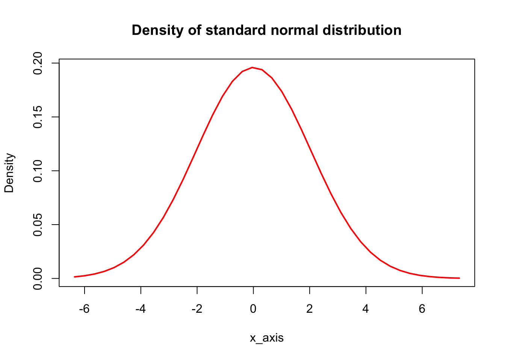
Exercise 3.4.
poisson_35_1000 <-
rpois(n = 1000, lambda = 3.5)
poisson_35_1000 |> hist(breaks = length(unique(poisson_35_1000)))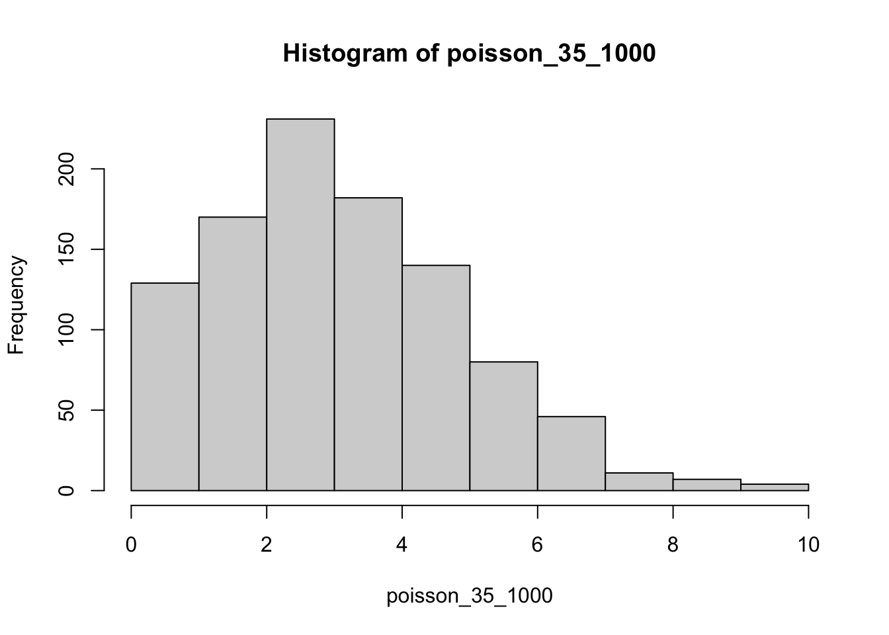
Excercise 3.5 Binomial distribution.
binom_03_20_1000 <-
rbinom(n = 1000, size = 20, prob = 0.3)
binom_03_20_1000 |> hist(breaks = length(unique(binom_03_20_1000)))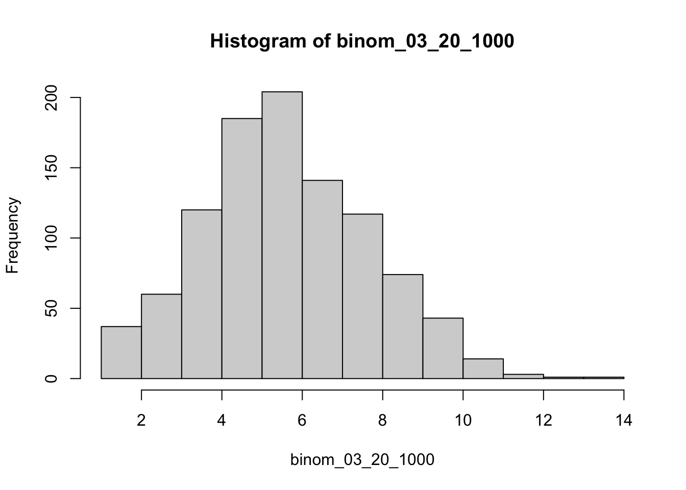
Exercise 3.6 Linear transformations.
The mean must be increased from 35 to 100 by adding 65, the standard deviation must be increased from 10 to 15 by multiplying with 1.5.
Transformation \(X' = aX + b\) \(mean(X') = a * mean(X) + b\) \(sd(X') = a * sd(X)\)
Now mean(X’) = 100, mean(X) = 35, sd(X’) = 15, sd(X) = 10
Substituting this: \(100 = a * 35 + b\) \(15 = a * 10\)
\(100 = 15/10 * 35 + b\) $ b = 47.5$ $ a = (100 - b) / 35 = 1.5$
transformation: \(X` = 1.5 * X + 47.5\)
original_scores = rnorm(n = 1000, mean = 35, sd = 10)
original_scores |> hist(breaks = 10)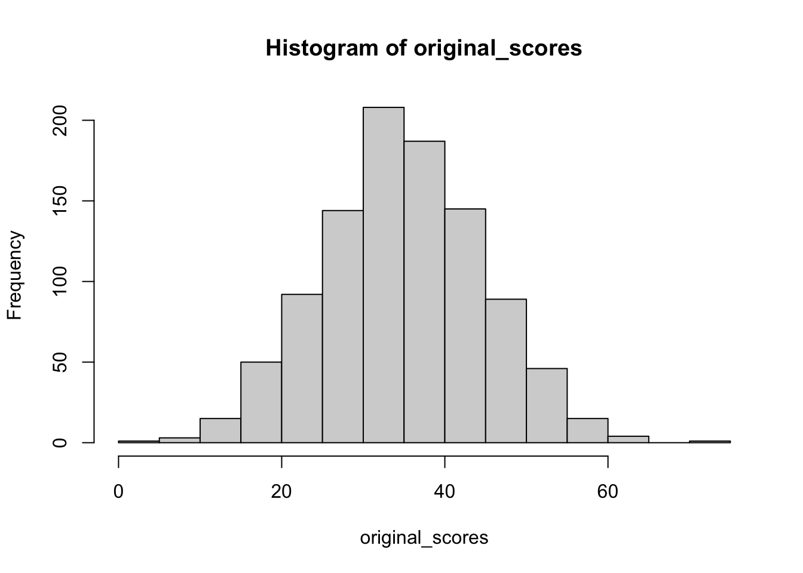
transformed_scores = 1.5 * original_scores + 47.5
transformed_scores |> hist(breaks = 10)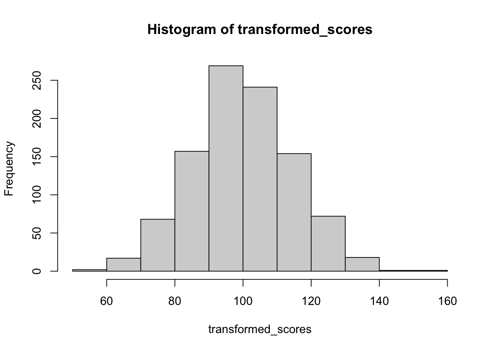
New range:
Lowest (X=0) is \(0 * 1.5 + 47.5 = 47.5\)
Highest (X=50) is \(50 * 1.5 + 47.5 = 122.5\)
Simple. First multiply to get the standard deviation right.
transformed_1 <- original_scores * 1.5
# Check that is ~15 now
sd(transformed_1)[1] 14.82577What is the mean after the first transformation?
mean(transformed_1)[1] 52.33731Add the difference between the target mean (100) and the current mean
transformed_2 <- transformed_1 + (100 - mean(transformed_1))
transformed_2 |> hist(breaks = 10)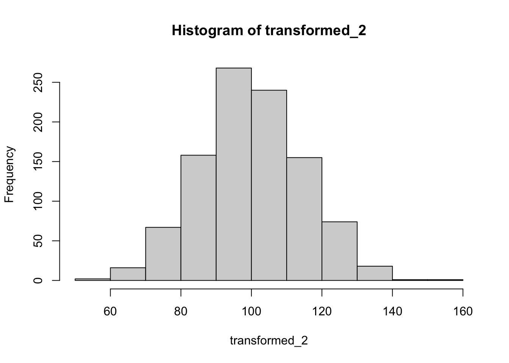
plot(original_scores, transformed_scores, type = "l")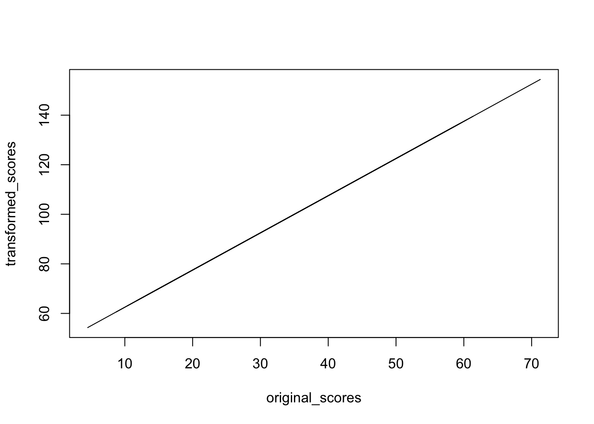
Exercise 3.8 Correlated random variables
correlation_hw = .3
mean_husbands = 69.1
sd_husbands = 2.9
mean_wives = 63.7
sd_wives = 2.7weighted sum:
.5 * mean_husbands + .5 * mean_wives[1] 66.4Standard deviation of .5 * husband + .5 wife
sqrt(.5^2 * sd_husbands +
.5^2 * sd_wives +
2 * .5 * .5 * correlation_hw)[1] 1.24499